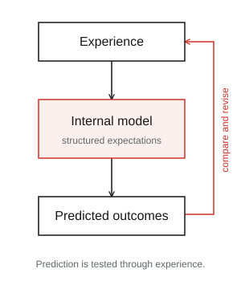
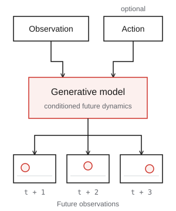
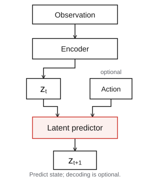
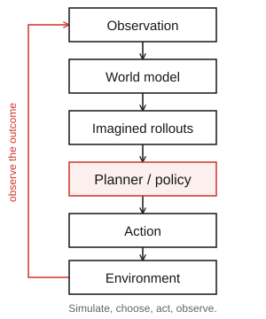

Compares predictive world-model representations with human behavior and macaque cortex, identifying strengths in appearance-invariant motion coding and a remaining temporal-integration gap.
arXiv 2026World models.
One research library.
Explore the models, papers, and open resources
shaping predictive and interactive intelligence.
A living research collection
1,557Entries
6Collections
1,498arXiv papers
Explore the library
Interactive browsing could not load. Browse the complete list on GitHub, or reload to try again.
All entries
Browse the complete collection.
Scope & inclusion criteria
Read source definition ↗1,557 entries
Origin of the concept. First articulation that organisms carry a "small-scale model" of external reality in their heads, enabling them to try out alternatives and react to future situations before they arise.
1943Classic behavioral evidence that animals learn map-like internal representations of the environment rather than mere stimulus-response chains — the ancestral "world model" in psychology.
Psychological Review 1948Landmark neuroscience synthesis identifying the hippocampus (place cells) as the neural substrate of Tolman's cognitive map; foundation for spatial world-model research.
1978Cognitive-science theory that reasoning operates over constructed internal models of situations rather than formal logic rules — a direct intellectual ancestor of "mental world modeling."
1983First computational formalization of a spatial world model for a physical agent.
Computer 1989Foundational representation: encode the future occupancy of states rather than immediate reward.
Neural Computation 1993Canonical evidence that the brain uses forward models to predict sensory consequences of motor commands — the neuroscience blueprint for action-conditioned prediction.
Science 1995The concrete computational predictive-coding model (predating Friston's free-energy generalization): higher cortical areas predict lower-level activity and feed back prediction errors.
Nature Neuroscience 1999Neuro-scientific grounding: the brain as a hierarchical Bayesian inference machine minimizing prediction error.
Nature Reviews Neuroscience 2010Humans use fast approximate physics simulators as a world model for intuitive physics.
PNAS 2013Seminal work. Learn a compressed (V) perception model + recurrent (M) world model, train a small controller (C) entirely inside imagination. Introduced MDN-RNN for stochastic world model.
arXiv 2018Counts reflect curated entries; a paper may appear in multiple categories. The full list contains 1,498 distinct arXiv IDs, including linked reports and resources. Last curated September 15, 2026.
01 / The taxonomyThree paradigms.
Three paradigms.
A shared foundation.
How a world is represented.
How its predictions are used.
Core modeling stepConceptual patterns · Membership can overlap
00
Mind

Internal models of the world connect perception, prediction, and action. Cognitive foundations frame the computational work that follows.
Explore collection ↗01
Generative

Generate observable futures: video, 3D scenes, occupancy, and other signals. Actions and context can steer how the world unfolds.
Explore collection ↗02
Representational

Predict how compact world states evolve. Latent dynamics and predictive representations support reasoning without rendering every detail.
Explore collection ↗03
Agentic

Use a world model to compare imagined outcomes, choose actions, and learn from interaction. Close the loop between prediction and control.
Explore collection ↗Surveys and benchmarks complete the map.
Browse benchmarks ↗Read across paradigms, then examine how their predictions are evaluated.
Generative and representational describe what is modeled; agentic describes how a model is used. The categories overlap. Mind World Models provides historical and cognitive context. Read the full definitions ↗
02 / Open research
Contribute on GitHub ↗Built for shared discovery.
A community-maintained library from OpenEnvision.
Help make the map more complete.